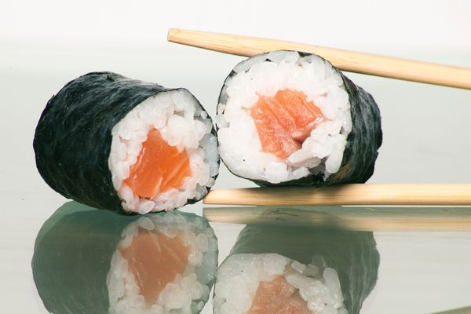

MAKİ
Makiler arasından en bilinen Sake Maki'dir. Sake maki yapmak için aşağıdaki adımları uygulayın.
Sake Maki (1 Kişilik)
Malzemeler:
- 500 Gram Pirinç
- 20 Gram Tuz
- Somon ve Ton Balığı
- 1 Adet Avokado veya Salatalık
- 90 Gram Şeker
- 150 Gram Sirke
- 1 Adet Yosun Yaprağı
- Wasabi
Yapılışı:
- İlk başta pirinci 2 saat kadar suda bekletin. Beklettikten sonra pirinci süzün.
- 600 ml suyun içine pirinçleri dökün. 15 dakika orta ateşte ve 15 dakika kısık ateşte pişirin.
- Sirke, şeker ve tuzu bir kabın içerisinde eriyene kadar ısıtın.
- 10 dakika kadar dinlendirdiğiniz pilava hazırladığınız sirkeli karışımı dökün.
- Somon ve ton balığını keskin bıçakla ince dilimler haline getirin. Yosun yapraklarını ikiye bölün.
- Soğuduktan sonra 100 gram pirinci yosun yaprağına yayıp içe doğru rulo şeklinde sarın. Sarmak için bambu tabaka kullanabilirsiniz.
- Üzerine ton balığı veya somon dilimlerini yerleştirin. İsteğe göre iç kısmına salatalık veya avokado ekleyebilirsiniz.
- Daha sonra wasabi eşliğinde servis edebilirsiniz.
